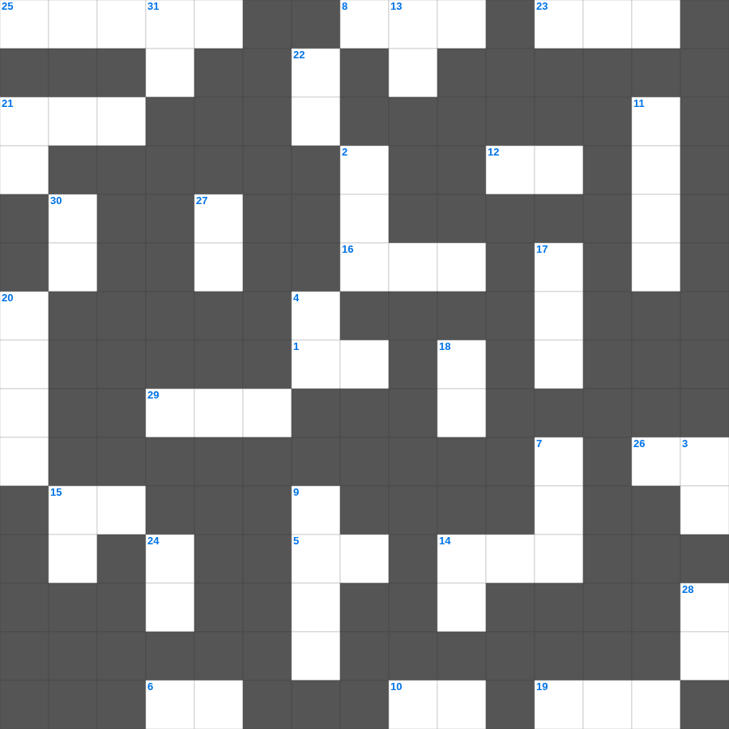

사도행전 마스터 100 (1/2)
📌 서비스 정의
십자가로세로는 교회 주보와 주일학교에서 사용할 수 있는 성경 기반 가로세로 퍼즐 서비스입니다. 성경 인물, 사건, 핵심 구절을 바탕으로 제작되었습니다. 온라인 풀이 및 인쇄 기능을 제공합니다.
📖 사도행전란?
사도행전은 부활하신 예수님의 명령에 따라 예루살렘에서 시작된 교회의 탄생과 바울의 선교 여정을 기록합니다. 성령 강림, 초대 교회의 성장, 이방인 선교가 핵심이며 총 28장입니다.
📚 사도행전의 주요 사건·주제
오순절 성령 강림 · 초대 교회의 형성과 성장 · 스데반의 순교와 사울의 등장 · 바울의 회심 · 바울의 선교 여행들
오늘은 사도행전의 주요 내용을 담은 사도행전 낱말 퍼즐를 준비했습니다. 총 35개의 힌트가 있으며, 주일학교 교재나 성경공부 자료로 활용하기 좋습니다. 무료로 즐기는 사도행전 가로세로 퍼즐을 지금 바로 풀어보세요!

📝 가로 힌트
1. 요한일서 3장 14절: 사랑하지 아니하는 자는 어디에 머물러 있나
3. 하박국 2장에서 우상을 만드는 자에게 선포된 것
5. 길에서 말씀을 풀어 주실 때에 우리 속에서 이것이 뜨겁지 아니하더냐
6. 요나가 도망치기 위해 배를 탔던 항구
8. 도마가 부활하신 예수를 보고 한 고백: 나의 주님이시요 나의 이것이시니이다
10. 주라 그리하면 너희에게 줄 것이니 곧 후히 되어 누르고 흔들어 이것 하도록
12. 운명하시며 하신 말씀: 아버지 내 이것을 아버지 손에 부탁하나이다
14. 한 나병환자를 고치신 후 아무에게도 말하지 말고 가서 이것에게 네 몸을 보이라 하심
15. 바울이 항해 중 배의 사람들에게 떡을 떼어 준 이유: 이것을 얻기 위함
16. 아모스 7장에서 아모스를 박해한 벧엘의 제사장
19. 여호와께서 시온에서 부르짖고 예루살렘에서 이것을 내시리니 하늘과 땅이 진동하리로다
21. 에돔 족속의 조상
23. 그러나 요나가 여호와의 얼굴을 피하려고 일어나 이것으로 도망하려 하여
25. 누가복음 10장에서 강도 만난 자를 도와준 이
26. 예루살렘 성을 보시고 우시며: 네가 오늘 이것에 관한 일을 알았더라면 좋을 뻔하였거늘
29. 해골이라 하는 곳에 이르러 예수를 십자가에 못 박고 두 이것도 그렇게 하니
📝 세로 힌트
2. 빌립보에서 만난 자색 옷감 장사로 온 집이 세례를 받은 여인
3. 그의 십자가의 피로 화평을 이루사 만물 곧 땅에 있는 것들이나 하늘에 있는 것들이 그로 말미암아 자기와 이것하게 되기를 기뻐하심이라
4. 누가복음의 저자 누가의 직업
7. 예수의 십자가 아래서 '이 사람은 진실로 하나님의 아들이었도다'라고 고백한 이
9. 보라 처녀가 잉태하여 아들을 낳을 것이요 그의 이름은 이것이라 하리라
11. 말라기 4장에서 예언된 '엘리야'는 신약의 누구를 가리키나
13. 누가복음의 평지 설교: 너희 가난한 자는 복이 있나니 하나님의 이것이 너희 것임이요
14. 너희가 서로 사랑하면 이로써 모든 사람이 너희가 내 이것인 줄 알리라
15. 헤롯이 예수를 보고 싶어 했던 이유: 그가 행하는 어떤 이것을 볼까 바랐기 때문
17. 베드로가 욥바에서 살려낸 여제자 (다비다)
18. 만군의 여호와가 이르노라 너희가 내 제단 위에 헛되이 불사르지 못하게 하기 위하여 너희 중에 성전 문을 이것 자가 있었으면 좋겠도다
20. 아리마대 요셉과 함께 장례를 도운 밤에 찾아왔던 사람
21. 말라기 1장에서 하나님이 미워했다고 하신 야곱의 형
22. 칠병이어 기적 때 남은 조각은 몇 광주리였나
24. 무리들 때문에 예수께 갈 수 없으므로 그 계신 곳의 이것을 뜯어 구멍을 내고
27. 대제사장의 뜰 아래 있던 베드로에게 예수를 아는 자라고 지목한 사람
28. 예수의 옷가에 손을 대어 구원받은 여인에게 하신 말씀: 딸아 네 이것이 너를 구원하였으니
30. 오순절 날 홀연히 하늘로부터 급하고 강한 이것 같은 소리가 있어
31. 베드로의 고백: 주님 그러하나이다 내가 주님을 사랑하는 줄 주님께서 이것나이다
🧩 이 퍼즐에서 배우는 내용
이 퍼즐은 사도행전 마스터 100 (1/2)의 핵심 단어와 개념을 자연스럽게 복습할 수 있도록 구성되었습니다. 주일학교 수업이나 개인 성경공부에서 학습 내용을 점검하는 용도로 바로 활용할 수 있습니다.
🧑🏫 교회 교육 자료 활용
이 퍼즐은 주일학교 교재 추천 자료로 활용할 수 있고, 주일학교 주보에 넣기 좋은 분량으로 구성되어 있습니다. 수업용 주일학교 교안에 활동지로 붙이거나, 예배 후 복습용 주일학교 공과교재로 바로 사용할 수 있습니다.
🏷️ 키워드
사도행전 낱말 퍼즐, 사도행전, 십자가로세로, 성경퀴즈, 말씀퀴즈, 가로세로퍼즐, 주일학교 교재 추천, 주일학교 주보, 주일학교 교안, 주일학교 공과교재